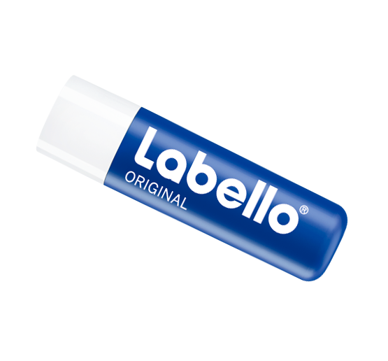

Hverdagens helte til intensiv pleje og beskyttelse
Labello - D
plejeeffekt
Ønsker du klassisk, fugtgivende læbepleje til daglig brug? Den giver næring til læberne med Labellos innovative fugtbevarende formula med en let konsistens til daglig brug. Benyt denne effektive læbepomade og få kysseklare, bløde og glatte læber. Den klassiske duft forkæler sanserne. Den øger optagelsen af calcium fra tarmsystemet og er nødvendigt for knoglernes og tændernes omsætning af calcium og fosfat. Sikrer balance i immunsystemet..
Ingredienser
Dejlig jojobaolie, naturlig shea-smør
farve og glans
Den giver læberne en farveløs finish og bløde, skønne og naturlige læber hver eneste dag.
Anvendelse
Benyttes dagligt efter behov på læberne for at give dem fugtighed.